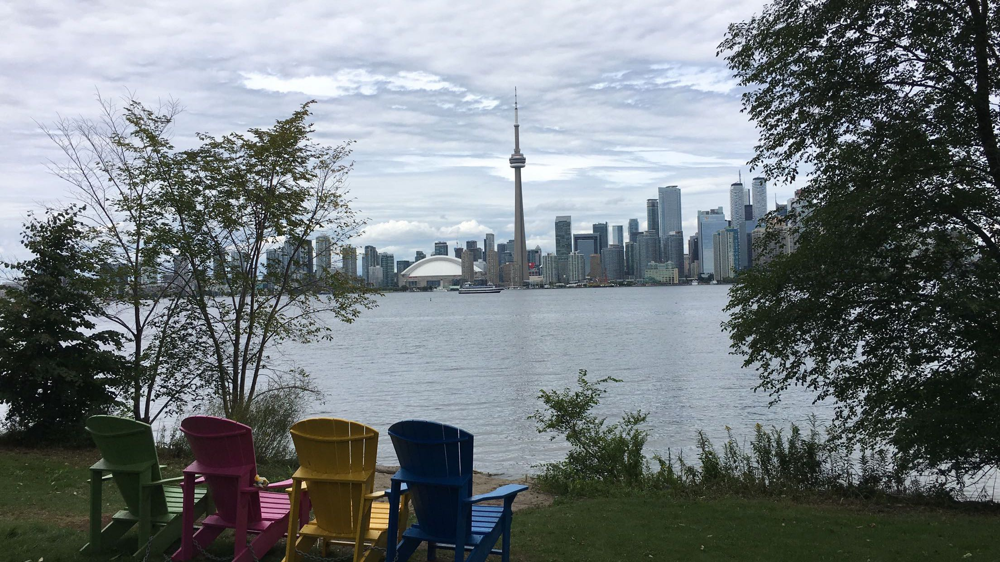

I'm Noah Mifsud Lattari, an American-Canadian Computer Science graduate from
Toronto Metropolitan University in Toronto, Ontario.
I'm Noah Mifsud Lattari, an American-Canadian Computer Science graduate from
Toronto Metropolitan University in Toronto, Ontario.
I recently joined Faire's Retailer Lifecycle team. Previously I worked at Shopify on the merchant billing team, Tesla on the Design Technology team, and Amazon on an Alexa team.
Someday, I'm thinking of pursuing graduate studies in the area of Human Computer Interaction. I'd like to use
computation to help us understand the brain more, specifically brain-computer interfaces (BCI).
What I've done on Campus
Ryerson Computer Science Course Union

Matthew Kowal and I presenting "What is Computer Science" to first year students.
At the Ryerson CSCU I've held multiple positions, currently I volunteer as the Vice President of Academics. This entails
me to handle all matters pertaining to undergraduate courses, grading, degree specializations, and academic events.
Giving out t-shirts on frosh week.
I joined the CSCU originally just to get something to put on my resume, but honestly It's been the most fun I've had at university. Ryerson can sometimes feel isolating due to its downtown campus and commuter
vibe. After joining the CSCU I made a bunch of great friends and immediately the campus felt more like a home, and less like a business to me. I'm committed to making Ryerson Computer Science the best program it
can be before I graduate.

View of the city from Toronto Centre Islands during RSS frosh week.
During the 2017 & 2018 Ryerson Science Society week of welcome, I was a student frosh leader. I got to take a bunch of incoming
science students around campus to various events. Overall was a pretty great opportunity to get more involved with other academic disciplines and meet tons
of new students.
In first and second year, I played competitive collegiate League of Legends for Ryerson eSports. Honestly I used to dedicate a
lot of time to LoL, from grinding ranked queue, scrims, practices, and LANs, my grades definitely suffered. I reached a peak rank of "Diamond 3" which is the top 0.3% of all
North American League players. A lot of people have asked me if it was worth it, or if I wished I spent my time studying or preparing for internships, and honestly it 100% was.
Other things I'm interested in are coffee & tea making, video games, keyboards, biking, bouldering, and weirdcore/breakcore music.
This usually involves taking feedback from students about current computer science courses, whether that be complaints or suggestions for improvement. We then
bring this feedback up during board meetings with professors in the faculty.
I also handle getting new courses approved for our degree. Currently, we are trying to add a mandatory statistics class in the undergraduate curriculum due to
growing popularity of Machine Learning. Speaking of ML, we are also pushing for two new degree concentrations
in Machine Learning and Computer Security.

Ryerson Science Society
Ryerson eSports

Drip
I think getting "good" at League of Legends taught me how to get good at something. It taught me a lot of things from leadership, dedication, and performing under pressure.
I may write a whole post about this sometime, but for now check out a similar post from Ryerson alumni Anthony Sistilli about Starcraft II and his career.
Interests & Hobbies